Автоматический вход в Windows 10 без ввода пароля G-ek.com
Первый способ рабочий
Отключить экран входа в систему, и автоматически входить в Windows 10/8/7
При запуске Windows, 10/8, вам будет предложено ввести пароль, чтобы иметь возможность войти в систему. Это позволяет защитить ваш компьютер, от несанкционированного доступа. Но если вы единственный человек, который использует компьютер, и вы не хотите, получать запрос на ввод пароля каждый раз, вы можете избавиться от этого процесса и войти в систему Windows автоматически без ввода пароля.
В этой статье, мы рассмотрим три способа, с помощью которых вы можете отключить экран входа в систему и автоматически входить Windows 10 без ввода пароля.
Способ 1. Автоматический вход в Windows, спомощью команд - control userpasswords2 и netplwiz.
Чтобы отключить экран входа в систему Windows, и автоматически входить Windows 10, выполните следующие действия
Нажмите сочетание клавиш Win+R открыв диалоговое окно Выполнить, введите одну из двух команд, представленных ниже:
Нажмите Enter, чтобы открыть окно Учетные записи пользователей.
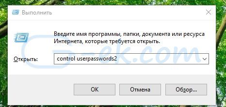
Снимите флажок - Требовать ввод имени пользователя и пароля, и нажмите кнопку Применить> OK.
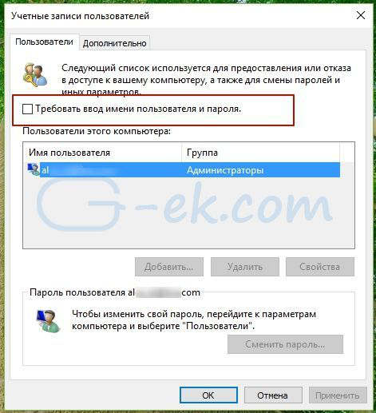
Это действие - открывает окно, в котором вы должны ввести свой пароль для учетной записи. Если учетная запись является локальной записью и не имеет пароля, просто оставьте это поле пустым.
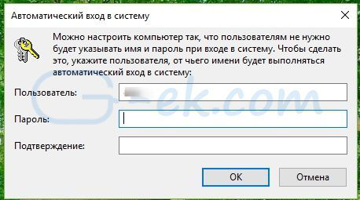
Перезагрузите компьютер.
После того, как вы сделаете это, вы обнаружите, что вы можете войти в систему Windows 10, 8 автоматически и вам ненужно вводить пароль или данные вашей учетной записи Microsoft.
Способ 2. Автоматический вход в Windows с помощью утилиты Microsoft AutoLogon
Использование Microsoft Autologon
Autologon это небольшая утилита предлагаемая Microsoft, которая может быть использована для настройки встроенного механизма автоматического входа в систему Windows 10. Подобно утилите netplwiz , вы можете сохранить учетные данные для любого локальной или MSA - учетной записи Microsoft. Наиболее важным преимуществом Autologon это шифрование пароля перед сохранением его в реестр.
Загрузите утилиту AutoLogon здесь, распакуйте архив и запустите файл autologon.exe . Заполните необходимую информацию и нажмите Enable, чтобы включить механизм обхода ввода пароля для выбранной учетной записи пользователя. На экране, появится сообщение подтверждающее, что Autologon успешно сконфигурирован.
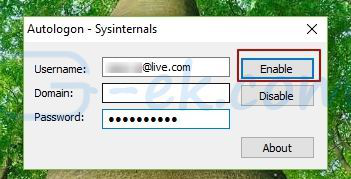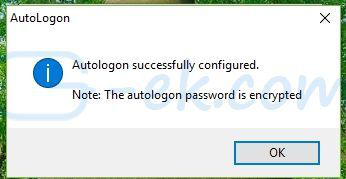
Вы также можете использовать утилиту AutoLogon с помощью командной строки, используя приведенный ниже синтаксис:
autologon user domain password
Способ 3. Автоматический вход в Windows с помощью редактора реестра.
Настройка Автоматического входа в Windows 10 с помощью редактора реестра
1. Создайте точку восстановления системы, а затем нажмите Win + R на клавиатуре, чтобы запустить диалоговое окно Выполнить. Введите regedit.exe и нажмите клавишу Enter, чтобы открыть редактор реестра.
2. Перейдите к следующему пути на левой боковой панели редактора реестра.
HKEY_LOCAL_MACHINE\SOFTWARE\Microsoft\Windows NT\CurrentVersion\Winlogon
3. Теперь, с права найдите параметр AutoAdminLogon и измените его значение на 1 .
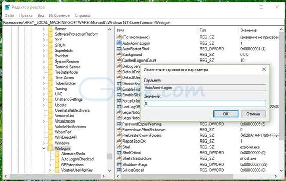
После этого, вам нужно создать несколько дополнительных строковых параметров для хранения значений данных учетной записи. Просто кликните правой кнопкой мыши на разделе Winlogon и выберите Создать> Строковой параметр и заполните их соответствующими значениями, в зависимости от присвоенного имени.
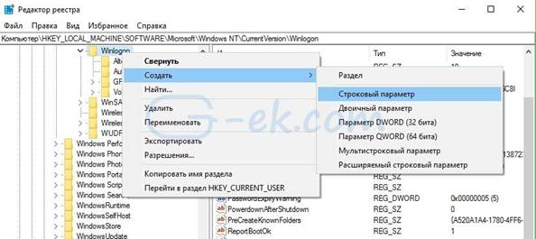
Если Строковой параметр уже существует, вам просто нужно изменить значение соответствующим образом.
|
Имя Строкового параметра |
Значение |
|
DefaultDomainName |
Имя компьютера (для локальной учетной записи) или имя домена |
|
DefaultUserName |
Имя пользователя (как в C: \ Users \ <Имя пользователя>) |
|
DefaultPassword |
Пароль для выбранной учетной записи |
После того, как заполнены все значения сохраните настройки и закройте редактор реестра.
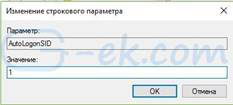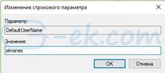
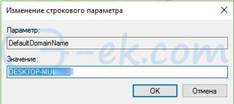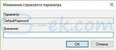
Должен отметить, что одним из недостатков использования редактора реестра для автоматического входа в систему, ваш пароль хранится в незашифрованном виде. Любой пользователь, имеющий доступ к реестру может посмотреть его. Поэтому рекомендуем вам использовать Способ с netplwiz или Autologon, ваш пароль будет надежно зашифрован и не будет хранится в редакторе реестра.
Надеюсь, что этот совет будет полезен для вас.